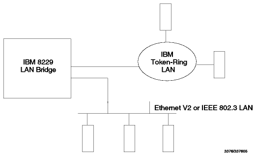
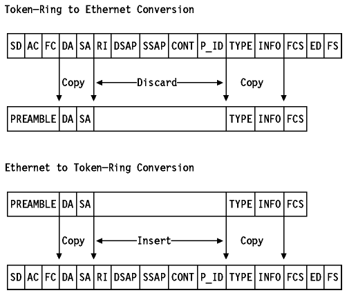

Table of Contents
Table of Contents  Configuration,
Management and Maintenance
Configuration,
Management and Maintenance
TCP/IP Tutorial and Technical Overview
The IBM 8229 Bridge replaces the withdrawn IBM 8209
LAN Bridge.
There are three models available:
- Model 1: Providing a connection between two local token-ring segments
- Model 2: Providing a connection between a local token-ring segment and a
local Ethernet segment
- Model 3: Providing a connection between a local token-ring segment and a
remote token-ring segment via a WAN at speeds up to T1/E1
The IBM 8229 Local Area Network Bridge allows devices on an IBM token-ring
LAN to communicate with devices on an Ethernet V2 or IEEE 802.3 LAN. The 8229
converts the data exchange between the two LANs. To a device on the token-ring
LAN, the 8229 appears as a bridge to another token-ring LAN. The 8229 is
functionally transparent to any device on the Ethernet V2 or IEEE 802.3 LANs.
In addition, the 8229:
- Supports Ethernet V2 and IEEE 802.3 traffic at the same time
- Supports either a 4 or a 16 Mbps token-ring LAN and does not affect
communications between token-ring stations
- Supports the IBM LAN Network Manager and NetView/390 for network management
(LLC Type 2)
- Provides an SNMP agent to support an SNMP manager like NetView for AIX with
the following MIBs:
- MIB II (RFC 1213)
- Standard Bridge MIB (RFC 1286)
- IBM Enterprise MIB
- Provides flash memory for code download
- Provides RS-232 port for out-of-band code download (XMODEM)
- Can be configured as the secondary bridge of the following IBM split
bridges:
- IBM Token Ring Bridge Program Version 2.2
- IBM Remote Token-Ring Bridge/DOS Version 1.0
- Is rack mountable
- Provides isolation between the LANs so unnecessary Ethernet LAN activity
does not intrude into the token-ring LAN environment and vice versa
Figure - 8229 Connection Diagram shows a
simple 8229 connection diagram.

Figure: 8229 Connection Diagram
The 8229 is configured to operate in one of two modes:
- Mode 1 - When the 8229 is configured to operate in mode 1, performing
subnetwork access protocol (SNAP) header processing, the TCP/IP or IPX protocol
is supported. Logical Link Control (LLC) based protocols, such as SNA or
NetBIOS, are also supported in this mode through token-ring to Ethernet
conversion for LLC-based protocols.
- Mode 2 - When the 8229 is configured in mode 2, as a transparent MAC
bridge, the 8229 transparently supports the transfer of LLC data. Protocols
that are LLC-based and that may use the 8229 in this mode are the SNA and
NetBIOS protocols.
Mode 1 is described in more detail as it supports the TCP/IP protocol. In
mode 1 two different conversions are supported: token-ring to Ethernet and
Ethernet to token-ring. Figure - 8229 TCP/IP
Support shows a layered diagram of 8229 TCP/IP support.

Figure: 8229 TCP/IP Support - Layered diagram.
Figure - 8229 TCP/IP Support shows
the conversion process.

Figure: 8229 TCP/IP Support - Conversion process.
In the Ethernet to token-ring conversion the 8229
retrieves the source routing information associated with the token-ring
destination address and inserts these fields and the fixed hex values AA AA 03
00 00 00 (SNAP header) representing the DSAP, SSAP, control and protocol ID
fields into the frame.
The 8229 provides the following connections:
- Token-ring (all models)
- DB-9 connector for STP cable (150 Ohms)
- RJ-45 connector for UTP cable (100 Ohms)
- Ethernet/802.3 (Model 2)
- AUI connector for 10Base-5 or 10Base-2 attachment
- RJ-45 connector for 10Base-T attachment
- WAN (Model 3 only)
Table of Contents  IBM
8271 EtherStreamer Switch
IBM
8271 EtherStreamer Switch